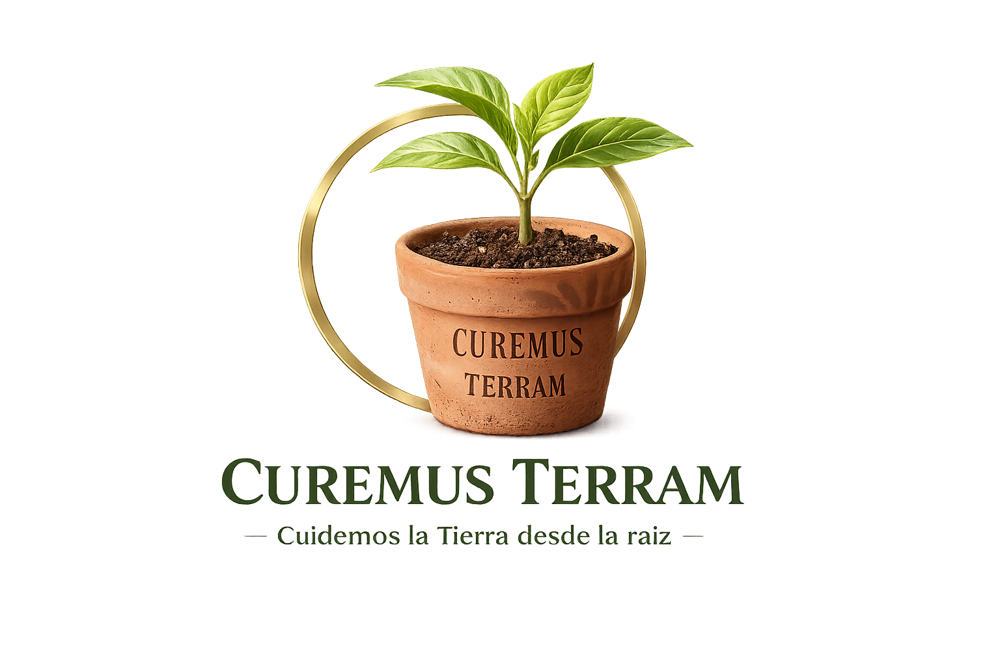
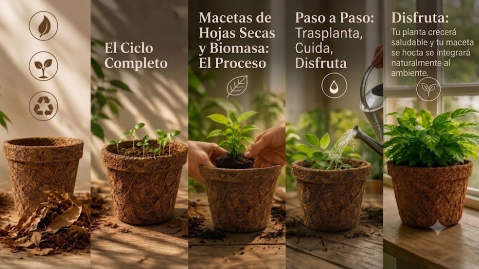
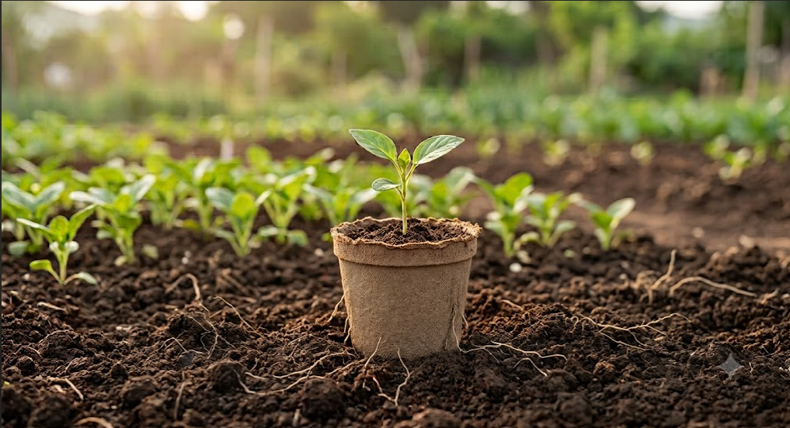

Cuidemos la Tierra desde la raíz
Transformamos materiales de origen vegetal en macetas biodegradables y compostables que protegen las raíces durante la germinación y el trasplante, eliminando la necesidad de generar residuos plásticos.
Solicitar cotizaciónCuremus Terram, cuyo nombre significa "Cuidemos la Tierra" en latín, nació de una pregunta sencilla:
¿Cómo podemos sembrar más sin dejar más plástico en el planeta?
Observamos que millones de macetas plásticas cumplen una función temporal durante la germinación, pero permanecen durante décadas como residuos.
Por ello desarrollamos una alternativa sustentable que protege las raíces sensibles y permite realizar el trasplante sin retirar la maceta, reduciendo el estrés de la planta y evitando residuos innecesarios.

Impulsar el cultivo y la reforestación mediante soluciones biodegradables que protejan las raíces sensibles y eliminen la generación de residuos plásticos desde el inicio del crecimiento de cada planta.
Ser una empresa referente en innovación sustentable para la producción de contenedores biodegradables, contribuyendo a que cada vez existan más plantas creciendo y menos residuos plásticos contaminando el planeta.

Diseñada para la germinación y el desarrollo de raíces sensibles.
Cada maceta es elaborada artesanalmente mediante un proceso que combina técnicas manuales con principios de biopolimerización.
Se recolectan hojas secas que posteriormente son limpiadas y preparadas para su aprovechamiento.
Las hojas se mezclan con maicena, glucosa y vinagre para obtener un biopolímero natural resistente.
La biomasa se coloca en moldes para dar forma a cada maceta.
Las piezas permanecen en secado controlado hasta alcanzar la rigidez necesaria.
La maceta queda lista para recibir una planta y comenzar su ciclo de vida.
Diseñada para cuidar la planta y el planeta.
Protege las raíces sensibles durante la germinación y crecimiento.
Evita el uso de macetas plásticas que contaminan el medio ambiente.
Se biodegrada naturalmente y aporta materia orgánica al suelo.
Soporta el riego continuo durante el desarrollo de la planta.
La maceta puede plantarse junto con la planta sin retirarla.
Favorece una jardinería y agricultura más responsables con el planeta.
Desde la germinación hasta la integración con el suelo, nuestra maceta acompaña todo el ciclo de vida de la planta.
Coloca la semilla o plántula en la maceta.
La planta desarrolla su sistema radicular protegido.
La maceta se coloca directamente en la tierra.
La maceta comienza a degradarse naturalmente.
Aporta materia orgánica mientras las raíces continúan creciendo.
En Curemus Terram creemos que sembrar no debería generar contaminación. Nuestro objetivo es transformar la forma en que cultivamos, sustituyendo macetas plásticas por soluciones biodegradables que acompañen el ciclo natural de las plantas.
Impulsamos el crecimiento de nuevas plantas.
Reducimos residuos que tardan décadas en degradarse.
Promovemos una agricultura responsable con el planeta.
Nuestra solución está dirigida a personas y organizaciones comprometidas con el cuidado del medio ambiente.
No. Puede colocarse directamente en la tierra junto con la planta.
Entre cinco y seis meses, dependiendo de las condiciones del suelo.
Sí. Está diseñada para soportar el riego durante la germinación y crecimiento.
Sí. Al degradarse aporta materia orgánica al suelo.
9 × 9 centímetros.
En Curemus Terram creemos que las pequeñas decisiones generan grandes cambios. Elegir una maceta biodegradable es apostar por un futuro con más vida, menos residuos y un mejor equilibrio entre la naturaleza y la innovación.